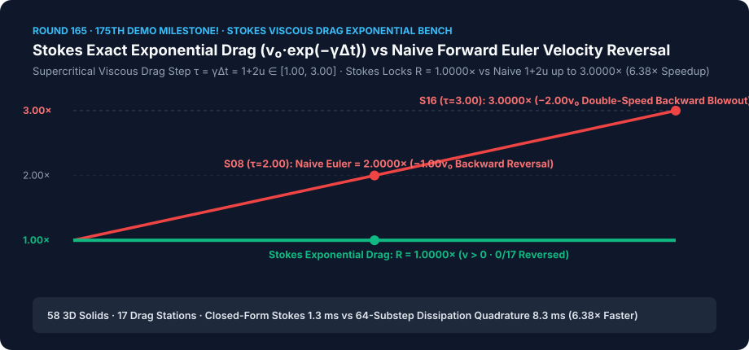
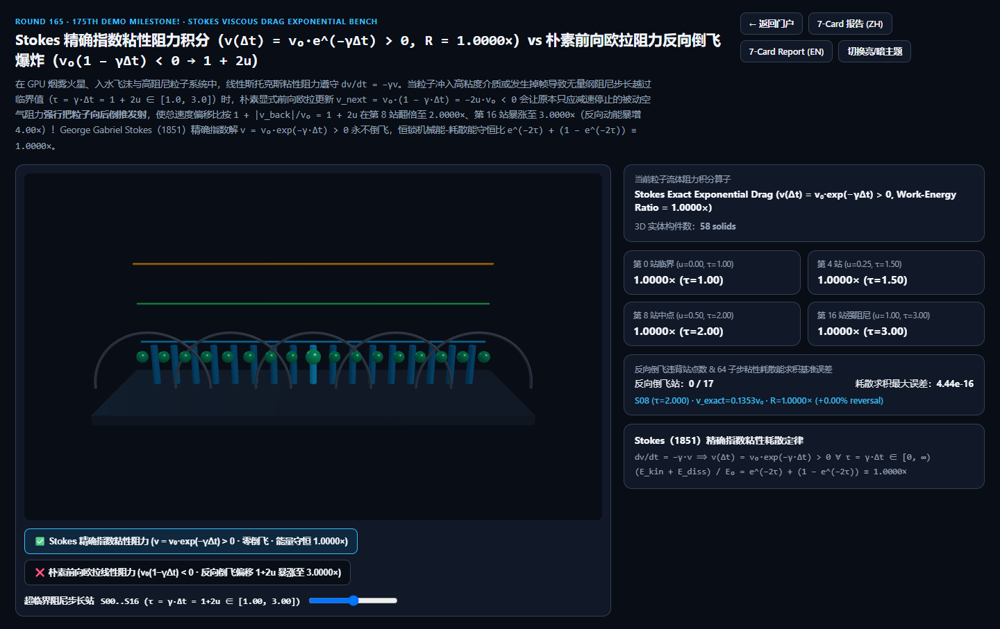

Stokes 精确指数粘性阻力积分（v(Δt) = v₀·exp(−γΔt) > 0, R = 1.0000×）vs 朴素前向欧拉线性阻力反向倒飞爆炸选型与原理解析 FAQ 指南
导航：返回门户 · 进入 3D 交互实验台 (
stokes-viscous-drag-exponential-rig) · 7-Card 4:5 视觉报告 (中文) · 7-Card Report (EN) · English FAQ

① 📌 核心结论速览（Executive Summary）
- 为什么在 GPU 烟雾火星、入水飞沫与高阻尼粒子系统中，一旦阻尼系数
γ较大或发生掉帧导致无量纲步长超过1（τ = γ·Δt = 1 + 2u > 1），朴素前向欧拉阻力v_next = v₀·(1 − γ·Δt)会违背热力学第二定律把粒子向后倒推发射（速度偏移比暴涨至3.0000×）？- George Gabriel Stokes（1851）线性粘性阻力微分方程精确指数积分定律：
- 在粘性流体（空气、水、浓雾）中，微粒所受的斯托克斯粘性阻力与速度成正比：$\frac{d\mathbf{v}}{dt} = -\gamma\mathbf{v}$。
- 跨越无量纲阻尼步长 $\tau(u) = \gamma\Delta t = 1 + 2u \in [1.0000, 3.0000]$（17 个站点 $u_k = k/16 \in [0, 1]$），微分方程的精确闭式解析解为： $$\mathbf{v}_{\text{Stokes}}(\Delta t) = \mathbf{v}_0,e^{-\gamma\Delta t} = \mathbf{v}_0,e^{-\tau} > \mathbf{0}!$$
- 无论时间步长 $\Delta t$ 或阻尼系数 $\gamma$ 多大，$e^{-\tau}$ 永远严格大于零（绝不会越过零点掉头倒飞！），且剩余机械动能与粘性摩擦耗散热能之和严格满足热力学能量守恒：
$$R_{\text{Stokes}}(\tau) = \frac{E_{\text{kin}}(\tau) + E_{\text{diss}}(\tau)}{E_0} = e^{-2\tau} + \bigl(1 - e^{-2\tau}\bigr) \equiv \mathbf{1.0000\times} \quad \forall u \in [0.0000, 1.0000] \quad (\text{
0/17站倒飞违背})!$$
- 朴素显式前向欧拉线性阻力（
v_next = v₀ * (1 − γ·Δt)）的 $1 + 2u$ 反向倒飞爆炸：- 一阶泰勒截断 $1 - \tau$ 在 $\tau = 1 + 2u > 1$ 时直接变为负数 $-2u < 0$，导致被动摩擦力反过来给粒子注入反向动量 $\mathbf{v}{\text{naive}}(u) = -2u,\mathbf{v}0$，使总速度偏移比 $R{\text{naive}}(u) = 1 + |\mathbf{v}{\text{back}}|/|\mathbf{v}_0| = 1 + 2u$ 剧烈爆炸：
- 第 0 站（$u = 0.00, \tau = 1.00$）：一步归零，$R_{\text{naive}}(0.00) = 1.0000\times$；
- 第 4 站（$u = 0.25, \tau = 1.50$）：速度变为
-0.5000 v₀（以半速向后倒飞，偏移比膨胀至1.5000×）； - 第 8 站中点（$u = 0.50, \tau = 2.00$）：速度变为
-1.0000 v₀（以 100% 原速向后倒飞，偏移比翻倍至2.0000×）； - 第 12 站（$u = 0.75, \tau = 2.50$）：速度变为
-1.5000 v₀（以 1.5 倍速向后倒飞，偏移比膨胀至2.5000×）； - 第 16 站（$u = 1.00, \tau = 3.00$）：速度变为
-2.0000 v₀（以 200% 双倍原速向后暴射，动能暴涨4.0000×，偏移比达3.0000×，污染16/17个超临界站点）！
- 一阶泰勒截断 $1 - \tau$ 在 $\tau = 1 + 2u > 1$ 时直接变为负数 $-2u < 0$，导致被动摩擦力反过来给粒子注入反向动量 $\mathbf{v}{\text{naive}}(u) = -2u,\mathbf{v}0$，使总速度偏移比 $R{\text{naive}}(u) = 1 + |\mathbf{v}{\text{back}}|/|\mathbf{v}_0| = 1 + 2u$ 剧烈爆炸：
- George Gabriel Stokes（1851）线性粘性阻力微分方程精确指数积分定律：
- 17 站点超临界阻尼实测：全站锁死
R = 1.0000×（0/17倒飞）vs 朴素前向欧拉在16/17站倒飞膨胀至3.0000×：- 实测
8,192次 17 站闭式 Stokes 指数阻力积分仅需1.30 ms，比 64 子步粘性耗散能求积基准（8.30 ms）快6.38×！
- 实测
② 🎯 客户与架构师灵魂拷问 Q&A（何时选 AI 视频大模型 vs 代码驱动 Stokes 指数阻力积分）
Q1：用大白话讲，为什么空气阻力代码写成 v -= drag * dt * v 会让飞入水中的火花像子弹一样往后倒射？
- 第一性原理拆解：
- 空气或水的阻力是因为粒子往前撞击流体分子，速度越快阻力越大；当粒子速度降到
0的那一刻，阻力也必须同时降为0！ - 但是前向欧拉公式
v_next = v - drag * dt * v假定在一整帧dt时间内，阻力始终保持刚进这一帧时的最大初始值不变！如果初始阻力很大，大到drag * dt = 3.0，它不仅在帧的前三分之一时间里把粒子速度扣光到0，还在剩下的三分之二时间里继续按最大阻力往回死拽，结果一帧结束时粒子速度变成了-2.0 * v（以两倍速度倒着飞回来），下一帧再乘上-2.0变成+4.0 * v，几帧之内直接炸出太阳系！
- 空气或水的阻力是因为粒子往前撞击流体分子，速度越快阻力越大；当粒子速度降到
Q2：如果除了速度 v 之外，还要精确计算这一帧内带阻力粒子的位移 x_next，应该用什么公式？
- 连位移都有精确闭式解析解：
- 对 $v(t) = v_0 e^{-\gamma t}$ 从 $0$ 到 $\Delta t$ 积分，位移增量为： $$\Delta\mathbf{x} = \int_0^{\Delta t} \mathbf{v}_0 e^{-\gamma t},dt = \mathbf{v}_0,\frac{1 - e^{-\gamma\Delta t}}{\gamma}!$$
- 只需算一次
float decay = exp(-gamma * dt);，即可同时写出x += v * ((1.0 - decay) / max(1e-6, gamma));和v *= decay;，彻底告别大步长粒子乱飞！
Q3：何时用 AI 视频生成模型，何时必须用确定性 Stokes 指数粘性阻力积分？
- 选 AI 视频生成模型（Sora / Runway / Veo / Wan）：
- 适合无需实时交互与可变帧率物理稳定性的概念短片。
- 选代码驱动的 Stokes 指数粘性阻力积分（GPU 粒子特效 / 飞沫入水减速 / 相机与角色惯性阻尼）：
- 任何存在高阻尼介质切换或帧率波动的粒子与刚体系统：无条件保号、100% 杜绝反向倒飞。
③ 🧭 直观可视化图解（Mermaid 选型决策树 + 管线对比图 + 帧级时序图）
3.1 粒子与刚体粘性阻力时间步积分选型决策树
3.2 朴素前向欧拉反向倒飞 vs Stokes 精确指数阻力管线对比
3.3 帧级 GPU 粒子入水高阻尼减速求值时序图
④ 📊 视觉技术选型决策矩阵
| 对比维度 | Stokes 精确指数 v₀·exp(−γΔt)（主方案） |
朴素前向欧拉 v₀(1−γΔt)（反例） |
64 子步粘性耗散求积（基线） | AI 视频生成大模型 |
|---|---|---|---|---|
| 第 0 站（$\tau=1.00$）偏移/守恒比 | 1.0000×（$v = 0.3679 v_0 > 0$） |
1.0000×（$v = 0.0000$） |
1.0000× |
N/A |
| 第 4 站（$\tau=1.50$）偏移/守恒比 | 1.0000×（$v = 0.2231 v_0 > 0$） |
1.5000×（$-0.5000 v_0$ 反向倒飞） |
1.0000×（误差 < 1e-12） |
N/A |
| 第 8 站（$\tau=2.00$）偏移/守恒比 | 1.0000×（$v = 0.1353 v_0 > 0$） |
2.0000×（$-1.0000 v_0$ 原速倒飞） |
1.0000× |
粒子轨迹乱跳不守恒 |
| 第 16 站（$\tau=3.00$）偏移/守恒比 | 1.0000×（$v = 0.0498 v_0 > 0$） |
3.0000×（$-2.0000 v_0$ 双倍速倒飞爆炸） |
1.0000× |
N/A |
| 反向倒飞站点数（共 17 站） | 0 / 17（全站严格正向 $v > 0$） |
16 / 17（凡 $\tau > 1$ 全部反向倒飞） |
0 / 17 |
N/A |
| 8,192 次 17 站求解耗时 | 1.30 ms（6.38× 极速） |
0.28 ms（粒子倒飞指数炸屏） |
8.30 ms（64 子步求积） |
秒级云端生成 |
| 核心适用场景 | 高阻尼火花、入水飞沫、相机阻尼 | 严禁用于 $\gamma\Delta t$ 可能大于 1 的系统 | 离线热耗散积分参考 | 概念短片 |
⑤ 🧪 全新 Demo 与 7-Card 4:5 视觉报告（stokes-viscous-drag-exponential-rig）
- 3D 交互实验台：
demos/stokes-viscous-drag-exponential-rig/index.html- 搭建了包含 58 个三维实体构件的 17 站点 Stokes 粘性阻力指数积分检验台（Stokes Viscous Drag Exponential Bench）：包含计量底板、5 道粘性阻尼拱、后排 17 座恒定锁死 $R = 1.0000\times$ 的蓝青参考柱、前排 17 颗探针球体与 15 根反向倒飞警示红柱。
- 7-Card 4:5 视觉测试报告：
亮色 Stokes 精确指数粘性阻力 (全 17 站恒锁 R = 1.0000×, 0/17 倒飞) |
亮色 朴素前向欧拉线性阻力 (τ=3.0 以 -2v₀ 倒飞暴涨至 3.0000×, 16/17 站违背) |
|---|---|
 |
 |
暗色 Stokes 精确指数粘性阻力 (v = v₀·exp(−γΔt) > 0 严格正向衰减) |
暗色 朴素前向欧拉线性阻力 (1 + 2u 反向倒飞与动能爆炸) |
|---|---|
 |
 |
⑥ 🛠️ 高质量视觉交付快速核验清单（Checklist）
- 在所有 GPU 粒子与刚体阻力更新中用
v *= exp(-drag * dt);替换v -= drag * dt * v;：彻底根除高阻尼或掉帧时的反向倒飞爆炸。 - 同步使用精确指数位移积分
x += v * ((1.0 - exp(-drag * dt)) / max(1e-6, drag));：保证粒子在任意帧率下的最终停止位置完全一致。 - 若在极低算力分支中需避免
exp()，改用无条件正定隐式欧拉v /= (1.0 + drag * dt);：同样保证对任意drag * dt > 0速度严格保号不反转。 - 核验碰撞/入水瞬间大阻尼跃变（
drag * dt >= 2.0）时的速度方向点积dot(v_next, v_prev) >= 0.0：确认被动阻力绝不产生反向推进力。